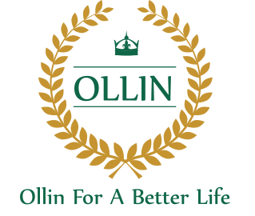

Are you looking for
Advanced Medical Nutrition
for all life stages?
Learn more about how medical
Ollin helps people of all ages live
longer, healthier lives.

Are you looking for information
on Early Life Nutrition?
Learn more about how Early Life Nutrition from
conception to toddlerhood influences a baby's
present and future health.